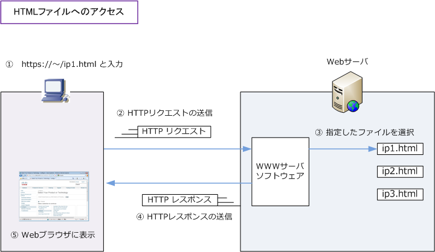
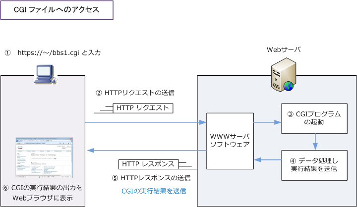

CGI （Common Gateway Interface ）
CGIとは
CGI（Common Gateway Interface）は、クライアント側のWebブラウザの要求に応じてWebサーバが 外部プログラムを呼び出して、その実行結果がHTTPを介してクライアントのWebブラウザに送信される 仕組みのことです。
Webサイトで例えば掲示板、アクセスカウンター、アンケートフォームなどWebページの内容を動的に 変化させたい時にCGIを使用します。CGIのプログラムはPerl（パール）と呼ばれるプログラミング言語 などによって記述されています。
先ず、htmlファイルにアクセスした場合のWebクライアントとWebサーバとの動作は次の通りになります。

次に、CGIファイルにアクセスした場合のWebクライアントとWebサーバとの動作は次の通りになります。 下図の通り、CGIの実行や処理はあくまでもサーバー側で行われる処理です。

なお、現在ではファイルに「 .cgi 」という拡張子を付けずにアクセスさせることが主流となっています。
CGIはWebサーバ側で実行されるのに対し、例えばJavaScriptはWebクライアント側 ※1で実行されます。 JavaScriptが埋め込まれたHTMLをHTTPを介してダウンロードすることで、JavaScript言語で記述された プログラムがWebクライアント側で実行されることになります。※1 JavaScriptは動的なWebページを作成 できるプログラミング言語です。なお 「Node.js」というWebサーバ側で動作するJavaScriptもあります。